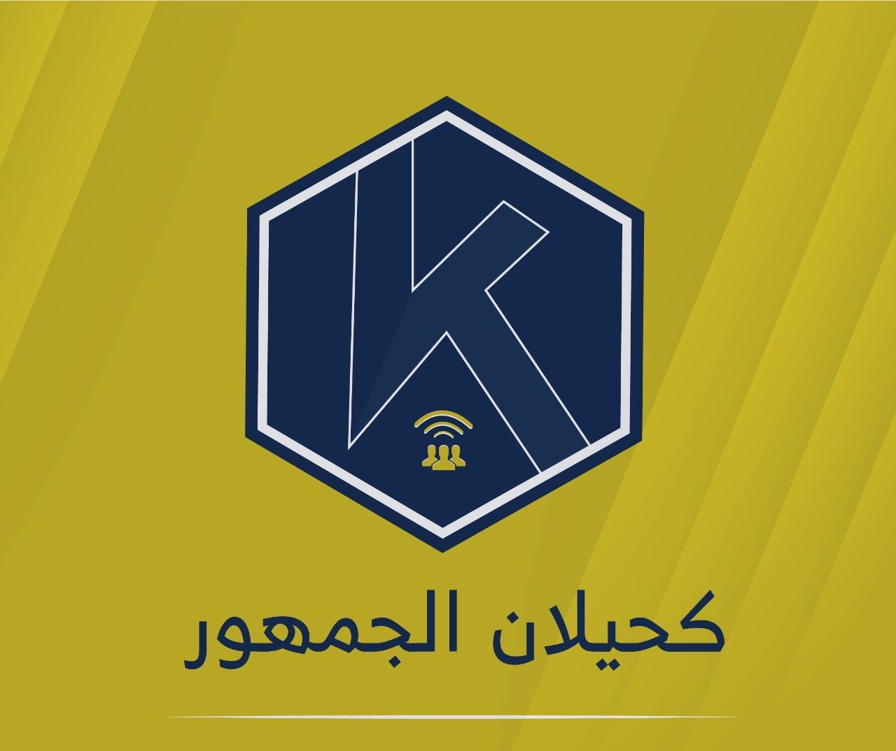

حيّاكم الله
يسعدني أن أرحب بكم أجمل ترحيب، أنتم مصدر الفخر والاعتزاز، وأنتم النبض الحقيقي للإبداع والعمل الدؤوب. أنتم من حولتم الجهد إلى إنجاز، والفكرة إلى واقع، والبساطة إلى تميز.
إنني معكم ومنكم، داعم أول لكم، ومؤمن بأن نجاحكم هو نجاح للمجتمع كله. أنتم قدوة في العطاء، وصورة مشرّفة للإصرار والطموح، وسأبقى دائمًا السند الذي يقف خلفكم، يشجعكم، ويفتح أمامكم الآفاق.
فميدان العمل ميدانكم، والمستقبل يزهو بكم، و"كحيلان الجمهور" يعتز بكل ما تقدمونه.
وفقكم الله وسدد خطاكم.
أخوكم المحب والداعم لكم دائمًا،
كحيلان الجمهور